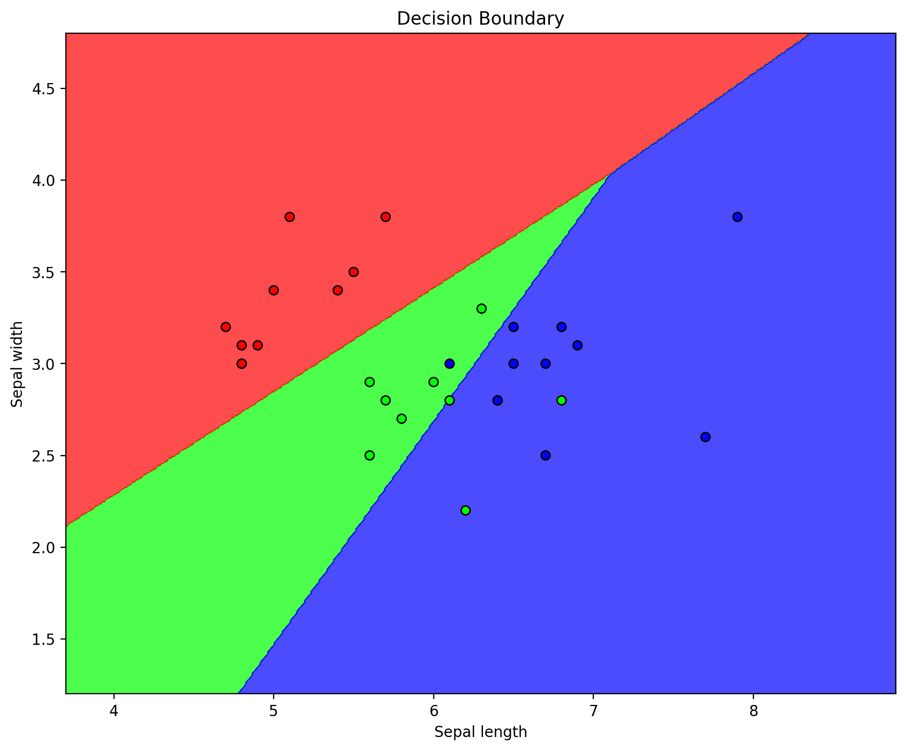

PyTorch in 7 Days: Day 2 - Autograd and Logistic Regression
Morning: Demystifying Autograd
1. Introduction to Autograd
Autograd is PyTorch's automatic differentiation engine. It allows us to compute gradients automatically, which is crucial for training neural networks.
import torch
# Create a tensor with requires_grad=True
x = torch.randn(3, requires_grad=True)
print(x)
# Perform some operations
y = x * 2
z = y.mean()
# Compute gradients
z.backward()
# Access gradients
print(x.grad)
tensor([ 0.8177, -0.8083, 1.7062], requires_grad=True)
tensor([0.6667, 0.6667, 0.6667])
This code demonstrates basic Autograd usage. We create a tensor x with requires_grad=True, perform operations on it, and then call backward() to compute gradients. The gradients are stored in x.grad.
2. Gradient Computation for Complex Functions
import torch
# Create tensors with requires_grad=True
x = torch.tensor([1.0], requires_grad=True)
y = torch.tensor([2.0], requires_grad=True)
# Define a complex function
z = x**3 * y**2 + torch.sin(x) * torch.cos(y)
# Compute the gradients
z.backward()
# Print the value of z and the gradients of x and y
print("Value of z:", z.item())
print("Gradient of x:", x.grad.item())
print("Gradient of y:", y.grad.item())
Value of z: 3.649824619293213
Gradient of x: 11.775155067443848
Gradient of y: 3.2348525524139404
This example demonstrates how to use PyTorch's automatic differentiation to compute the gradients of a more complex function involving multiple variables.
3. Preventing Gradient Tracking
Sometimes we want to use a tensor in our computations without tracking its gradients. Here's a simple example:
import torch
# Create a tensor with gradient tracking
x = torch.tensor([1.0, 2.0, 3.0], requires_grad=True)
# Regular operation - gradients are tracked
y = x * 2
y.backward(torch.tensor([1.0, 0.1, 0.01]))
print("Gradient tracking enabled:")
print(f"y requires grad: {y.requires_grad}")
print(f"x.grad: {x.grad}")
x.grad.zero_()
# Prevent gradient tracking using torch.no_grad()
with torch.no_grad():
z = x * 2
print("\nUsing torch.no_grad():")
print(f"z requires grad: {z.requires_grad}")
print(f"x.grad: {x.grad}")
# Prevent gradient tracking using detach()
w = x.detach() * 2
print("\nUsing detach():")
print(f"w requires grad: {w.requires_grad}")
print(f"x.grad: {x.grad}")
Gradient tracking enabled:
y requires grad: True
x.grad: tensor([2.0000, 0.2000, 0.0200])
Using torch.no_grad():
z requires grad: False
x.grad: tensor([0., 0., 0.])
Using detach():
w requires grad: False
x.grad: tensor([0., 0., 0.])
Gradient Tracking Enabled: - When we perform operations on x, the resulting tensor y keeps track of gradients. - Calling backward() on y computes gradients for x. - x.grad will contain the computed gradients.
Using torch.no_grad(): - Inside the torch.no_grad() context, operations on x do not track gradients. - The resulting tensor z does not require gradients. - This operation doesn't affect x.grad.
Using detach(): - x.detach() creates a new tensor that shares the data with x but doesn't track gradients. - Operations on the detached tensor (like creating w) don't track gradients. - This also doesn't affect x.grad.
Afternoon: Logistic Regression for Classification
1. Preparing the Data
from sklearn.datasets import load_iris
from sklearn.model_selection import train_test_split
import numpy as np
# Load the Iris dataset
iris = load_iris()
X = iris.data
y = iris.target
# Convert to PyTorch tensors
X = torch.FloatTensor(X)
y = torch.LongTensor(y)
# Split the data
X_train, X_test, y_train, y_test = train_test_split(
X, y, test_size=0.2, random_state=42
)
We load the Iris dataset, convert it to PyTorch tensors, and split it into training and test sets. This prepares our data for training a logistic regression model.
2. Implementing Logistic Regression
import torch.nn as nn
import torch.optim as optim
class LogisticRegression(nn.Module):
def __init__(self, input_dim, output_dim):
super(LogisticRegression, self).__init__()
self.linear = nn.Linear(input_dim, output_dim)
def forward(self, x):
return self.linear(x)
# Create the model
model = LogisticRegression(2, 3)
# Define loss function and optimizer
criterion = nn.CrossEntropyLoss()
optimizer = optim.SGD(model.parameters(), lr=0.01)
We define a simple logistic regression model using PyTorch's nn.Module. The model consists of a single linear layer. We also set up the loss function (Cross-Entropy Loss) and optimizer (Stochastic Gradient Descent).
3. Training the Model
num_epochs = 10000
# Use the first two features for training
X_train_2d = X_train[:, :2]
X_test_2d = X_test[:, :2]
for epoch in range(num_epochs):
# Forward pass
outputs = model(X_train_2d)
loss = criterion(outputs, y_train)
# Backward pass and optimization
optimizer.zero_grad()
loss.backward()
optimizer.step()
if (epoch + 1) % 100 == 0:
print(f"Epoch [{epoch+1}/{num_epochs}], Loss: {loss.item():.4f}")
Epoch [100/10000], Loss: 0.7289
Epoch [200/10000], Loss: 0.7141
Epoch [300/10000], Loss: 0.7010
Epoch [400/10000], Loss: 0.6894
Epoch [500/10000], Loss: 0.6790
Epoch [600/10000], Loss: 0.6697
Epoch [700/10000], Loss: 0.6612
Epoch [800/10000], Loss: 0.6535
Epoch [900/10000], Loss: 0.6465
Epoch [1000/10000], Loss: 0.6400
Epoch [1100/10000], Loss: 0.6341
Epoch [1200/10000], Loss: 0.6285
Epoch [1300/10000], Loss: 0.6234
Epoch [1400/10000], Loss: 0.6186
Epoch [1500/10000], Loss: 0.6141
Epoch [1600/10000], Loss: 0.6099
Epoch [1700/10000], Loss: 0.6059
Epoch [1800/10000], Loss: 0.6022
Epoch [1900/10000], Loss: 0.5987
Epoch [2000/10000], Loss: 0.5953
Epoch [2100/10000], Loss: 0.5921
Epoch [2200/10000], Loss: 0.5891
Epoch [2300/10000], Loss: 0.5863
Epoch [2400/10000], Loss: 0.5835
Epoch [2500/10000], Loss: 0.5809
Epoch [2600/10000], Loss: 0.5784
Epoch [2700/10000], Loss: 0.5760
Epoch [2800/10000], Loss: 0.5737
Epoch [2900/10000], Loss: 0.5715
Epoch [3000/10000], Loss: 0.5694
Epoch [3100/10000], Loss: 0.5673
Epoch [3200/10000], Loss: 0.5653
Epoch [3300/10000], Loss: 0.5634
Epoch [3400/10000], Loss: 0.5616
Epoch [3500/10000], Loss: 0.5598
Epoch [3600/10000], Loss: 0.5581
Epoch [3700/10000], Loss: 0.5564
Epoch [3800/10000], Loss: 0.5548
Epoch [3900/10000], Loss: 0.5533
Epoch [4000/10000], Loss: 0.5517
Epoch [4100/10000], Loss: 0.5503
Epoch [4200/10000], Loss: 0.5488
Epoch [4300/10000], Loss: 0.5474
Epoch [4400/10000], Loss: 0.5461
Epoch [4500/10000], Loss: 0.5448
Epoch [4600/10000], Loss: 0.5435
Epoch [4700/10000], Loss: 0.5422
Epoch [4800/10000], Loss: 0.5410
Epoch [4900/10000], Loss: 0.5398
Epoch [5000/10000], Loss: 0.5387
Epoch [5100/10000], Loss: 0.5375
Epoch [5200/10000], Loss: 0.5364
Epoch [5300/10000], Loss: 0.5353
Epoch [5400/10000], Loss: 0.5343
Epoch [5500/10000], Loss: 0.5332
Epoch [5600/10000], Loss: 0.5322
Epoch [5700/10000], Loss: 0.5312
Epoch [5800/10000], Loss: 0.5302
Epoch [5900/10000], Loss: 0.5293
Epoch [6000/10000], Loss: 0.5283
Epoch [6100/10000], Loss: 0.5274
Epoch [6200/10000], Loss: 0.5265
Epoch [6300/10000], Loss: 0.5256
Epoch [6400/10000], Loss: 0.5248
Epoch [6500/10000], Loss: 0.5239
Epoch [6600/10000], Loss: 0.5231
Epoch [6700/10000], Loss: 0.5223
Epoch [6800/10000], Loss: 0.5215
Epoch [6900/10000], Loss: 0.5207
Epoch [7000/10000], Loss: 0.5199
Epoch [7100/10000], Loss: 0.5191
Epoch [7200/10000], Loss: 0.5184
Epoch [7300/10000], Loss: 0.5176
Epoch [7400/10000], Loss: 0.5169
Epoch [7500/10000], Loss: 0.5162
Epoch [7600/10000], Loss: 0.5155
Epoch [7700/10000], Loss: 0.5148
Epoch [7800/10000], Loss: 0.5141
Epoch [7900/10000], Loss: 0.5134
Epoch [8000/10000], Loss: 0.5128
Epoch [8100/10000], Loss: 0.5121
Epoch [8200/10000], Loss: 0.5115
Epoch [8300/10000], Loss: 0.5108
Epoch [8400/10000], Loss: 0.5102
Epoch [8500/10000], Loss: 0.5096
Epoch [8600/10000], Loss: 0.5090
Epoch [8700/10000], Loss: 0.5084
Epoch [8800/10000], Loss: 0.5078
Epoch [8900/10000], Loss: 0.5072
Epoch [9000/10000], Loss: 0.5066
Epoch [9100/10000], Loss: 0.5061
Epoch [9200/10000], Loss: 0.5055
Epoch [9300/10000], Loss: 0.5049
Epoch [9400/10000], Loss: 0.5044
Epoch [9500/10000], Loss: 0.5039
Epoch [9600/10000], Loss: 0.5033
Epoch [9700/10000], Loss: 0.5028
Epoch [9800/10000], Loss: 0.5023
Epoch [9900/10000], Loss: 0.5018
Epoch [10000/10000], Loss: 0.5012
This loop trains the model for 1000 epochs. In each epoch, we perform a forward pass, compute the loss, backpropagate the gradients, and update the model parameters. We print the loss every 100 epochs to monitor progress.
4. Evaluating the Model
with torch.no_grad():
correct = 0
total = 0
outputs = model(X_test_2d)
_, predicted = torch.max(outputs.data, 1)
total += y_test.size(0)
correct += (predicted == y_test).sum().item()
print(f"Accuracy on the test set: {100 * correct / total:.2f}%")
Accuracy on the test set: 86.67%
After training, we evaluate the model on the test set. We use torch.no_grad() to disable gradient computation during evaluation. We compare the model's predictions to the true labels and calculate the accuracy.
Visualizing Decision Boundaries (Optional)
import matplotlib.pyplot as plt
from matplotlib.colors import ListedColormap
import matplotlib_inline
matplotlib_inline.backend_inline.set_matplotlib_formats("retina")
def plot_decision_boundary(X, y, model):
h = 0.01 # step size in the mesh
x_min, x_max = X[:, 0].min() - 1, X[:, 0].max() + 1
y_min, y_max = X[:, 1].min() - 1, X[:, 1].max() + 1
xx, yy = np.meshgrid(
np.arange(x_min, x_max, h), np.arange(y_min, y_max, h)
)
# Create a mesh grid
mesh = np.c_[xx.ravel(), yy.ravel()]
with torch.no_grad():
Z = model(torch.FloatTensor(mesh)).argmax(dim=1).numpy()
Z = Z.reshape(xx.shape)
plt.figure(figsize=(10, 8))
cmap = ListedColormap(["#FF0000", "#00FF00", "#0000FF"])
plt.contourf(xx, yy, Z, cmap=cmap, alpha=0.7)
plt.scatter(X[:, 0], X[:, 1], c=y, cmap=cmap, edgecolor="black")
plt.xlabel("Sepal length")
plt.ylabel("Sepal width")
plt.title("Decision Boundary")
plt.show()
plot_decision_boundary(X_test_2d, y_test, model)
/var/folders/6p/cryczg_12j35l8ljqg1h0trc0000gp/T/ipykernel_61280/3451339761.py:12: DeprecationWarning: __array__ implementation doesn't accept a copy keyword, so passing copy=False failed. __array__ must implement 'dtype' and 'copy' keyword arguments.
np.arange(x_min, x_max, h), np.arange(y_min, y_max, h)

This function visualizes the decision boundaries of our logistic regression model. It creates a mesh grid, predicts the class for each point in the grid, and plots the results. This helps us understand how our model is separating the different classes in the feature space.